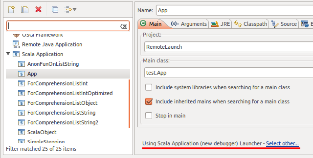
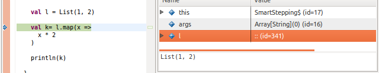

Scala Debugger new
Goals
The idea is to provide a debugger inside Scala IDE more targeted to Scala code.
The main goals are:
- Hide the artifacts created by the Scala compiler
- Have an intuitive stepping through Scala code
- Identify elements as Scala
Where to get it?
The Scala debugger has been merged into trunk, so the latest version is available in the nightly builds
Using the Scala debugger
The Scala debugger is available as an alternate debug mode launcher for the Scala applications and Equinox Weaving Eclipse applications.
It can be set as the default launcher from the Run\Debug → Launching → Default Launchers preferences:

Or it can be selected in each launch configuration:
Features
Scala-like display
In the different views (debug, variables, and more later), the types and methods are displayed the way they would be written in Scala code.
toString display
In the variables view, the detail pane show the toString value, or its equivalent, for the currently selected entity.

Logical structures support
By default, the variables view shows the internals of each entity.

But in a lot of cases, it is not the sought after information. Using the Show Logical Structure toolbar button, the data is shown is a more synthetic way.
In the preview version, only support for List has been tested
Smart stepping
A normal Java debugger is made to debug applications written in Java. It cannot handle concept like closures.
In a situation like the following, it would jump the full map call when asked to do a 'step over'.
The Scala debugger is able to find those and stop inside the closure. The closure variables are visible.
After an other 'step over', the debugger stops at the evaluation of the closure for the second element.

At the next 'step over', the debugger exits the map call, and stop at the assignment. After an extra 'step over', the result is visible in k.

The same way, the 'step into' action allows you to step right into the closure, and the 'step out' action to return to the original call.
In the preview version, 'step into' is not working fine with primitive types
Boxed primitive values
The value of boxed primitives is extracted to be displayed.

Clean stack frame list
Smart stepping 'hides' the internal details of collections and closure. This information is also hidden in the debug view, only the relevant stack frames are displayed.
Not in the preview version
Display the value returned by the last executed method
To know the return value of a method without having to add an extra local variable.
A proof of concept is working. Need to define the exact behavior and devise a way to present the value
Remote Debugging
Using the Scala debugger for a remote debugging session is done by selecting one of the Scala connector in a normal 'Remote Java Application' launch configuration. The remainder of the configuration is the same as for Java remote debugging.

Status
- Smart stepping over/in/out anonymous functions (for comprehension, collection methods, ...).
- Resume/terminate launch action.
- The structure of the Scala implementation of the Eclipse debug model.
- Improved label and value display.
- No good icons for the model elements.
- No caching of any data.
- No drop to frame.
- Need to define and spec the exact behavior of the smart step in/over/out.
known issues
TODO
may not be exhaustive or up-to-date, not really ordered
updated 2012-05-03
- Take care of breakpoints in Scala Debugger, currently still done by JDT debugger
- Use own jdi event dispatcher, instead of using the JDT debugger one
- Set the right icon according to the element type and state
- Improve the labels
- Running, Suspended, Terminated suffix on debug target and thread
- option to display simple or fully qualified types
- clean way to display object name, without the $
- filtered stack frames option
- to hide some Scala internals, like collections
- configurable list in preferences
- filter elements in the variable view
- static fields
- synthetics
- logical structures
- map support
- extension point for additional support
- use IIndexedValue for arrays
- better smart step into support
- collection of primitive type elements
- drop to frame support
- step over and step out relative to the currently selected stackframe
- cache data used for smart stepping
- result of findAnonFunction
- keep enabled ClassPreparedRequests to avoid requesting allClasses every time
- better Scala breakpoints
- may still need to be based on Java breakpoints
- smarter add breakpoint
- method breakpoint support
- watchpoint support
Development setup
The feature has been merged in master, on Scala IDE's github.
The Scala debugger adds 2 new plugins: org.scala-ide.sdt.debug and org.scala-ide.sdt.debug.tests.
In Eclipse
The Scala debugger makes use of the JDI to communicate with the VM. For some valid reasons, the jdt.debug plug-in provides a non-generic version of it. The Scala debugger uses the newer generic version, so some tweaking is needed inside Eclipse.
On Mac OS X
The generic version of the JDI is included by default in the VM libraries, just remove the JAVA_HOME/lib/tools.jar entry from the Java build path to have the project to compile.
On the other OSes
On non-Mac OS X systems, JDI is not part of the VM default libraries. To steps are needed to have the project to compile correctly:
- create a Classpath Variable in Window → Preferences → Java → Build Path → Classpath Variables named JAVA_HOME, which points to the root folder of your JDK installation.
- in Window → Preferences → Java → Installed JREs, edit your JDK, and use Add External JARs to add the JDK_HOME/lib/tools.jar library.